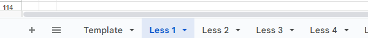
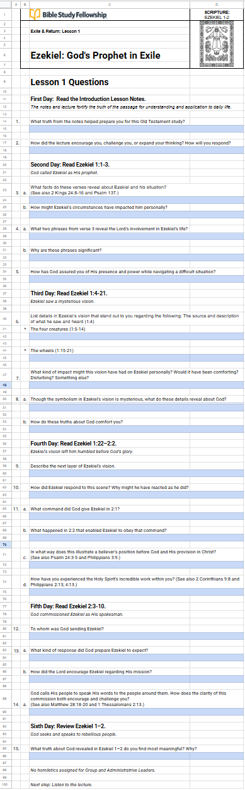

It sure was great to see everyone last night! I was greatly encouraged by the turnout — hearing everyone's enthusiasm and appreciation for BSF, for John, and for this group. The moment I saw everyone's faces on my screen I thought, truly this is a group that's blessed by God. I'm sure all the BSF groups are, but there's still something special going on in this one.
Having said that, I'll be honest — my freakout feelings were back before, during, and after. I'll just have to take it one step at a time, the way I did last year. It was particularly hard, and I made it to the end, so I'm hoping to build on that.
The reason for this email: I was working on Lesson 1 this morning and built myself a template in Google Docs so I can work on it anytime, anywhere — PC, iPad, or phone. I know you all have your own systems that work for you — pen, paper, pencil, Morse code, it's all good. Speaking of Morse code, here's my first response to the group this year.
Here's the template I'm going to use to capture all my answers to our Discussion Questions this year. At the bottom you'll see a tab for each lesson:

And here's what the actual template looks like, given to us by BSF — the blue boxes are where you put your responses:

Comments